These screenshots are quite outdated and left here mainly for the record. I hope you appreciate the vintage
KDE desktop from Knoppix (see the dates ;) ).
| 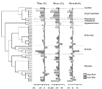 | Plotting a phylogeny and distributions of three traits for each species (contributed by Enrico Rezende; source: Richter-Boix A., Tejedo M. & Rezende E. L. 2011. Evolution and plasticity of anuran larval development in response to desiccation: a comparative analysis. Ecology and Evolution 1: 15–25.). Example code on how to make a similar plot can be found here. |
| 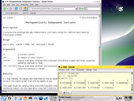 | A view on the console computing phylogenetically independent contrasts (with random data for the occasion), and the corresponding help page in HTML open with Mozilla Firefox (using the command help.start() in R) in the backgound. |
| 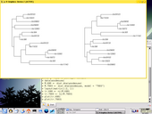 | Loading the `woodmouse' data set, computing the distance matrices with two substitution models (K80, the default for this function, and TN93), computing the neighbour-joining trees for both, and plotting both estimated trees. |
| 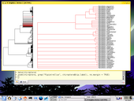 | Using the function zoom to visualize the genus Pipistrellus within the Chiroptera supertree (source: Jones et al. 2002). The window partition is done automatically (no need to call layout). |
| 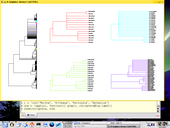 | A more fanciful example: we visualize four genera. The use of lapply is clearly helpful here: the two first
commands could be replaced with:
ind<- list(grep("Murina",chiroptera$tip.label), grep("Artibeus", chiroptera$tip.label), grep("Kerivoula", chiroptera$tip.label), grep("Eptesicus", chiroptera$tip.label)) |
| 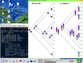 | Two ways, among many others, to add symbols on the nodes of a tree (with a random tree and random data): piecharts and thermometers (I personnaly prefer the latter). The code is available in the help page of nodelabels. |
| 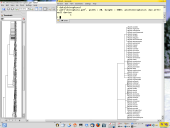 | The graphical window of R is not scrollable, but you can write a tree to a PDF file: if your viewer automatically refreshes its content from the disk (as KPDF does), then you have real-time plotting of large trees. |
| 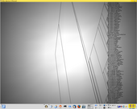 | An experiment linking ape with rgl (a port of OpenGL to R). The limitation is that the zoom actions can be done only on the centre of the point of view. |
| 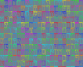 | Phylogenetic pop-art.
par(bg = "slategrey") n <- 20 s <- 1:n^2 layout(matrix(s, n, n)) for (i in s) plot(rcoal(n), no.margin = TRUE, show.tip.label = FALSE, edge.color=sample(rainbow(n^2), size=1), direction="u") |
| 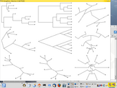 | A collection of trees by ape.
tr <- rtree(10) layout(matrix(1:9, 3, 3)) par(mar = rep(0, 4)) plot(tr) plot(tr, "c") plot(tr, "u") plot(tr, "p", FALSE) plot(tr, "c", FALSE) plot(tr, "u", FALSE) plot(tr, "r") plot(tr, "f") plot(tr, "f", FALSE) |
| 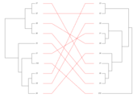 | Two trees can be plotted face-to-face easily with cophyplot (here from the examples of the help page). |